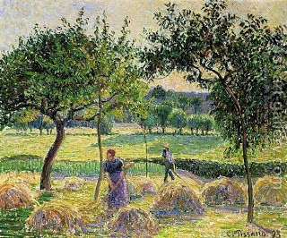

Bava Batra 69 - Sale of a Field

One who sells a field without specifying what is included in the sale has sold the stones that are for the use of the field, such as to hold the harvested sheaves. He has also sold the reeds in the vineyard inside that field, used to support the vines. He has sold produce that is attached to the ground, even if it is ready to be cut. He has sold the carob tree that has not been grafted and the virgin sycamore (planetree) that has not been pruned. All these items either serve the field or aren't significant in their own right.
If he said "I am selling you the field and all that is contained therein," he has additionally sold cut harvest. Even so, he has not sold independent items, such as pruned sycamore tree and a sturdy watchman's hut.